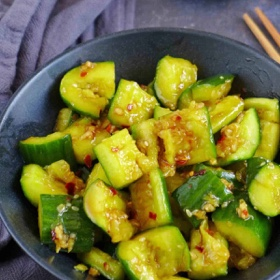

← All recipes
SMASHED CUCUMBER SALAD (拍黄瓜)

Servings: Serving: 1 · Prep: 3 minutes ·
Ingredients
- 1 large cucumber - or 2 small ones (about 350g/12oz)
- ¼ teaspoon salt
- 2 cloves garlic - minced
- 1 tablespoon light soy sauce
- ½ tablespoon black rice vinegar - e.g. Chikiang vinegar
- 1 teaspoon sesame oil
- 1 pinch sugar
- Chinese chili oil - to taste
- Sichuan pepper oil - optional
Directions
- Place cucumber onto a chopping board. Use the side of a cleaver, or a rolling pin/a meat pounder, to smash it. Make sure the pressure is enough to crack it open by one stroke, instead of pounding it multiple times on one spot. Then cut it crosswise into bite-sized pieces.
- Transfer the cucumber to a bowl. Sprinkle evenly with salt. Leave to rest for 10 minutes or so. Then drain away the water extracted by the salt (see note).
- Add light soy sauce, black rice vinegar, sesame oil, sugar, minced garlic, chilli oil and Sichuan pepper oil if using. Toss very well to evenly distribute the seasonings.
- Enjoy it right away or let it sit for 2 minutes before serving (The flavour will penetrate further into the cucumber).
Notes
The salting process isn’t compulsory if you’re in a hurry. If you skip this step, add half of the salt (⅛ tsp) when seasoning the cucumber.
Original source: redhousespice.com